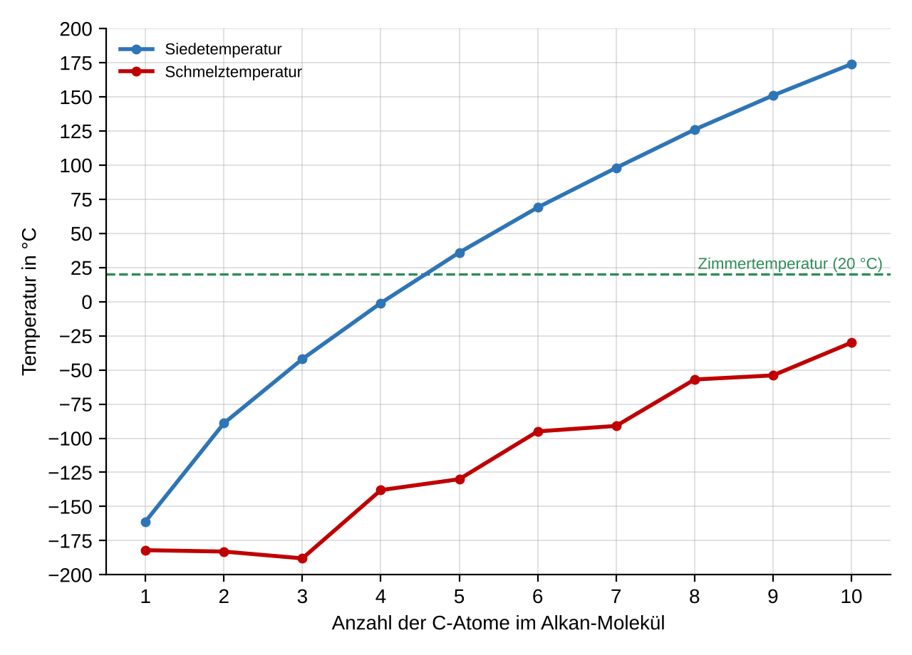
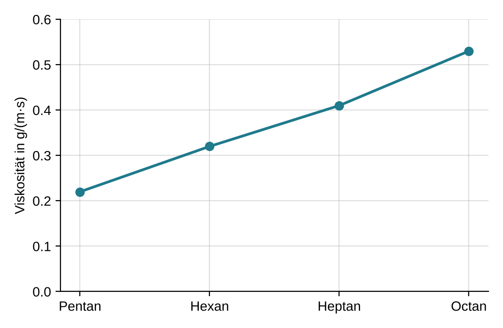

So nutzen Sie die Hilfen: Versuchen Sie es erst allein. Öffnen Sie dann Hilfe 1, danach Hilfe 2. Die Lösung dient zur Kontrolle – vergleichen Sie sie mit Ihrer eigenen Antwort und verbessern Sie diese.
Aufgabe 1: Diagramm zeichnen
Zeichnen Sie Schmelz- und Siedetemperaturen ein!
Hilfe 1
x-Achse: Anzahl der C-Atome (Methan = 1 … Decan = 10). y-Achse: Temperatur. Für jedes Alkan zwei Punkte setzen – Schmelztemperatur rot, Siedetemperatur blau.
Hilfe 2
Verbinden Sie die roten Punkte untereinander und die blauen Punkte untereinander zu je einer Linie.
Lösung (erst nach eigenem Versuch öffnen!)

Aufgabe 2: Aggregatzustand bei 20 °C
Geben Sie den Aggregatzustand an!
Hilfe 1
Siedetemperatur unter 20 °C → bei 20 °C schon gasförmig. Schmelztemperatur über 20 °C → noch fest. Liegt 20 °C dazwischen → flüssig.
Lösung (erst nach eigenem Versuch öffnen!)
gasförmig: Methan bis Butan · flüssig: Pentan bis Hexadecan · fest: Heptadecan
Aufgabe 3: Zusammenhang beschreiben
Beschreiben Sie den Zusammenhang!
Hilfe 1
„Beschreiben“ heißt: nur sagen, was passiert, noch nicht warum. Satzanfang: „Je mehr C-Atome …“
Lösung (erst nach eigenem Versuch öffnen!)
Mit zunehmender Kettenlänge steigen Siede- und (im Wesentlichen) Schmelztemperaturen.
Aufgabe 4: Lückentext
Ergänzen Sie den Lückentext!
Hilfe 1
ΔEN von C–H (0,4) und C–C (0) → polar oder unpolar? Welche Wechselwirkung bleibt zwischen unpolaren Molekülen?
Hilfe 2
Mehr Elektronen und größere Oberfläche → die Wechselwirkungen werden stärker. Was muss man zuführen, um sie zu überwinden?
Lösung (erst nach eigenem Versuch öffnen!)
unpolare · unpolaren · London-Dispersions-Wechselwirkungen · London-Dispersions-Wechselwirkungen · zu · Energie
Aufgabe 5: Viskosität
Zeichnen, beschreiben und begründen Sie!
Hilfe 1
x-Achse: Pentan, Hexan, Heptan, Octan; y-Achse: Viskosität (0 bis 0,6).
Hilfe 2
Viskosität = wie schwer die Moleküle aneinander vorbeigleiten. Was hält sie zusammen, und wie ändert sich das mit der Kettenlänge?
Lösung (erst nach eigenem Versuch öffnen!)

Aufgabe 6: Diesel bei Frost
Erklären Sie!
Hilfe 1
Vergleichen Sie die Kettenlängen in Diesel (bis C₂₂) und Benzin (bis C₁₁). Schauen Sie in der Tabelle nach den Schmelztemperaturen langer Alkane.
Lösung (erst nach eigenem Versuch öffnen!)
Lange Alkan-Moleküle im Diesel: starke LDW, hohe Schmelztemperaturen → bei Frost Kristallbildung. Kürzere Moleküle im Benzin: schwächere LDW, Schmelztemperaturen weit unter 0 °C.
Aufgabe 7 (★ Wahl): Öl in Wasser und Hexan
Erklären Sie die Beobachtung!
Hilfe 1
Öl-Moleküle bestehen großteils aus langen Kohlenwasserstoffketten – welche Wechselwirkungen bilden sie? Welche bilden Wasser-Moleküle untereinander?
Lösung (erst nach eigenem Versuch öffnen!)
Öl und Hexan: unpolar, LDW → mischbar. Wasser: Wasserstoffbrücken, die Öl-Moleküle nicht ersetzen können → nicht mischbar.
📱 Weiter üben: App „BioChemie FOS BOS Würzburg“ → Molekulare Stoffe → Zwischenmolekulare Wechselwirkungen